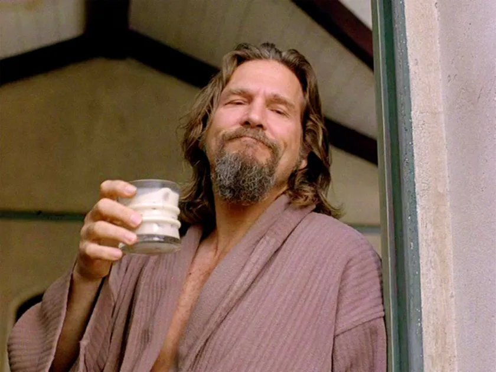

Ankit Shah
Curator, Thinker & Frame-by-Frame Observer • 24 Years Old
Welcome to my corner of the internet.
I'm a medical student with a tendency to get distracted by films, books, and whatever rabbit hole happens to catch my attention that week. Most of my days are spent trying to make sense of anatomy, physiology, and the occasional mountain of lecture slides.
Outside of medicine, I love cinema. I'm drawn to films that linger—whether it's the aching romance of In the Mood for Love, the quiet heartbreak of Carol, or the moral complexity of The Human Condition. A good film can stay with me for weeks.
I read for much the same reason. The books that stick with me tend to ask difficult questions, put people in impossible situations, or reveal something uncomfortable about being human. Sometimes they're literary classics, sometimes science fiction, and sometimes they're impossible to categorize.
This site is simply a collection of the things I'm learning, building, and thinking about.